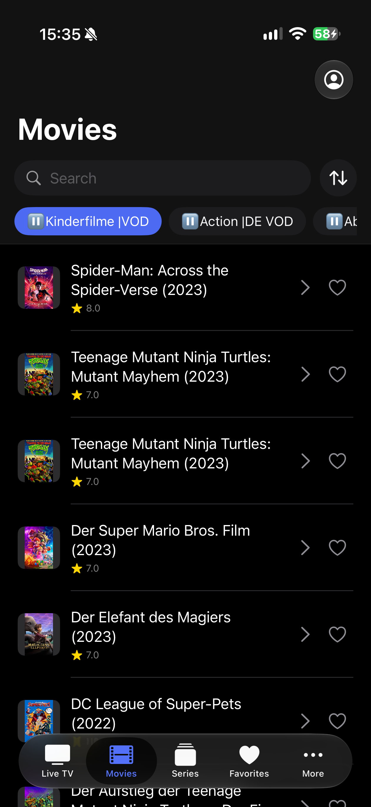
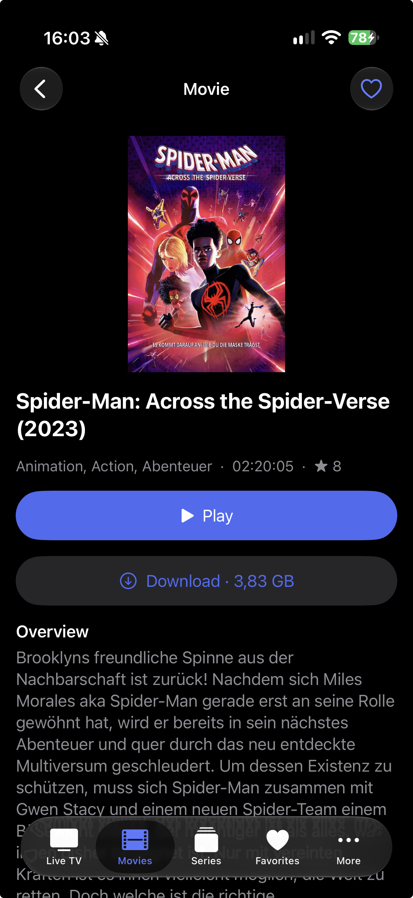

Ajouter
Ajoutez un identifiant Xtream Codes ou un lien M3U / M3U8
Connectez-vous avec Apple pour synchroniser favoris et historique entre vos appareils

Xtream, EPG, sans pub
Lecteur M3U
Un lecteur simple pour votre propre liste M3U ou Xtream Codes.
TV en direct, films et séries. Sans pub.
Favoris, téléchargements et reprise.
Easytv Play est un lecteur média. Il ne fournit ni chaînes, ni abonnements, ni contenu. Ajoutez uniquement une source que vous avez le droit de regarder. L'EPG, les sous-titres et la qualité du flux dépendent de votre fournisseur.
Pas de publicité. Pas de suivi par des tiers.

VOTRE LISTE
Easytv Play ne fournit ni chaînes, ni abonnements, ni contenu. Ajoutez uniquement une source que vous avez le droit d'utiliser.
Favoris, téléchargements, EPG, reprise, sous-titres, verrouillage Face ID et connexion avec Apple.
Ajouter
Connectez-vous avec Apple pour synchroniser favoris et historique entre vos appareils
TV en direct
Cherchez dans votre bibliothèque et enregistrez des favoris
Guide

Reprise

Téléchargements

Il ne fournit ni chaînes, ni abonnements, ni contenu. Ajoutez uniquement une source que vous avez le droit de regarder. L'EPG, les sous-titres et la qualité du flux dépendent de votre fournisseur.
Pas de publicité. Pas de suivi par des tiers.
Écrans





Licences
Cette app utilise les composants open source suivants.
© VideoLAN et les auteurs de VLCKit.
Sous la GNU Lesser General Public License, version 2.1 ou ultérieure (LGPL-2.1-or-later). Le framework est lié dynamiquement et peut être remplacé par l’utilisateur conformément à la LGPL.
Easytv Play est un lecteur média. Il ne fournit ni chaînes, ni abonnements, ni contenu. Ajoutez uniquement une source que vous avez le droit de regarder. L'EPG, les sous-titres et la qualité du flux dépendent de votre fournisseur.
Ajoutez un identifiant Xtream Codes ou un lien M3U / M3U8
Pas de publicité. Pas de suivi par des tiers.
Connectez-vous avec Apple pour synchroniser favoris et historique entre vos appareils. Le détail est dans la politique de confidentialité.
Assistance pour Easytv Play. Écrivez à hello@soneraltin.com.